Gives concrete before/after delivery numbers (headcount-equivalent, timeline compression, PR throughput) from named public case studies (Nubank, a Latin American bank, Built), useful as a comparison point when evaluating a coding-agent v...
This traces Cognition's own argument as told in the talk, from PR-volume evidence to the FDE delivery mechanism to named case-study payoffs, not an independent audit of the numbers (ours).
“using our agent, we were able to ship almost an order of magnitude more good quality robust PRs across the organization.”
said at 02:04“the problem isn't like writing code faster, that's usually only 20% of the problem.”
said at 04:08“over the course of those 3 months, we delivered about 150% like plus headcount.”
said at 11:52“So, about like 82% reduction across like delivery.”
said at 12:54“we deliver almost double the amount of PRs that engineers were able to do with single-point tools and before you brought in an agent harness like Devin.”
said at 13:25“there was an ETL migration. They had 50 engineers staffing this migration. We were able to deliver this within, um, I think like 1/3 of the timeline.”
said at 14:28“We have another bank, right? We have another use case where we work with one of the largest banks in Latin America. They were trying to migrate like the tax identification system.”
said at 14:28“we're actually able to, you know, generate the weekly output of like over 10 engineers at the organization.”
said at 14:59(ours) All figures (150% headcount, 82% reduction, 2x PR volume, 1/3 timeline, half effort, 10x weekly output) are Cognition's own framing of anonymized or named customer engagements with no independent verification or stated measurement methodology in the talk.
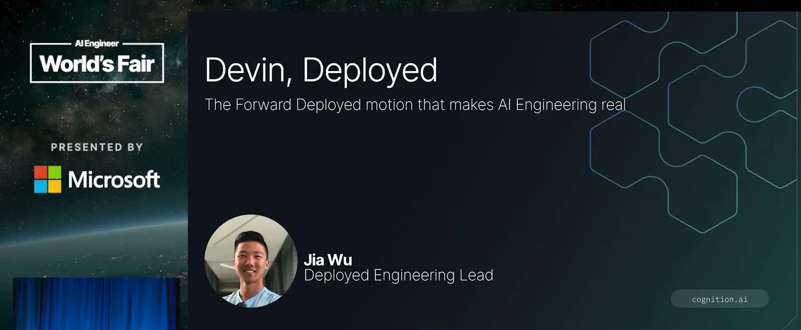
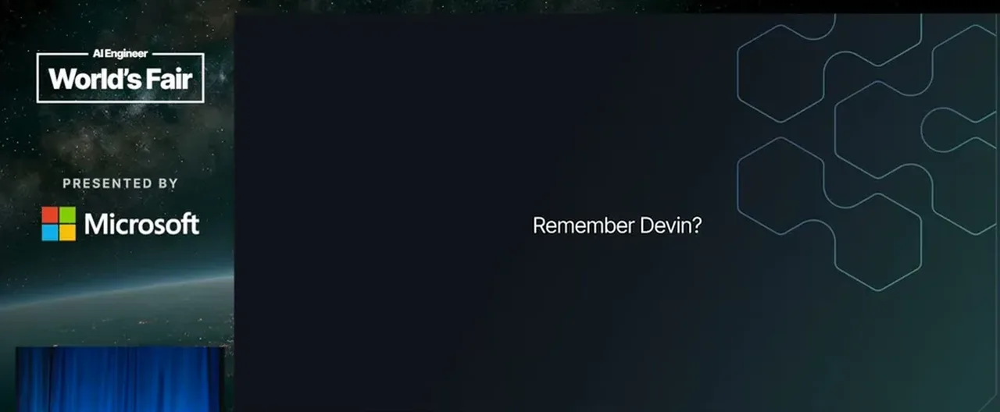
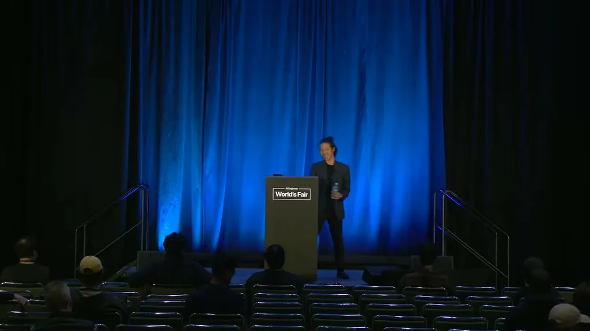
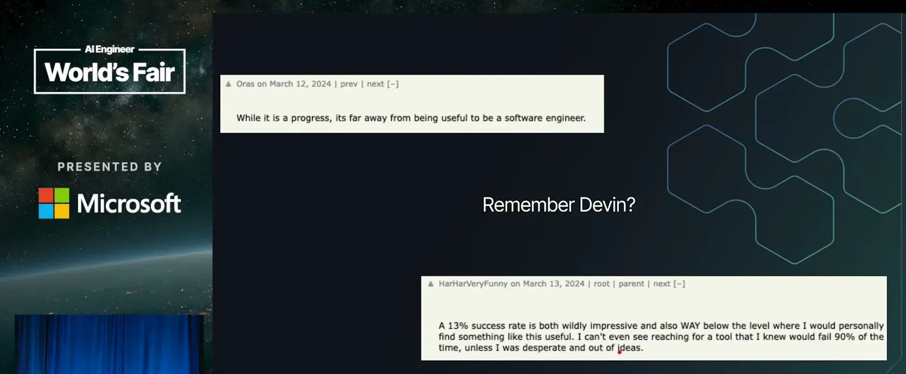
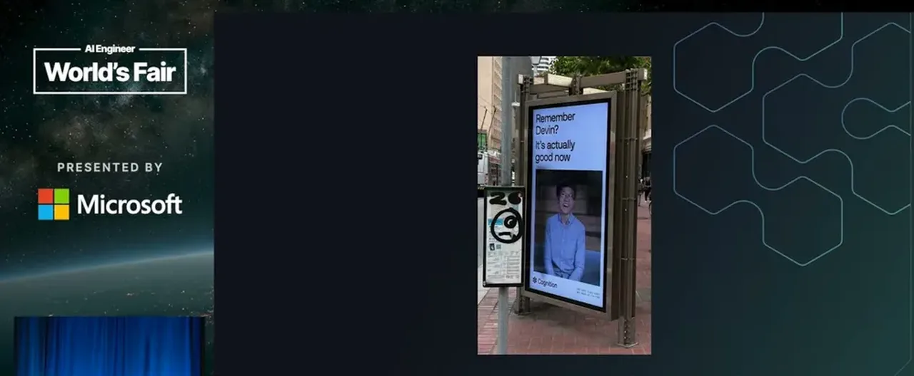
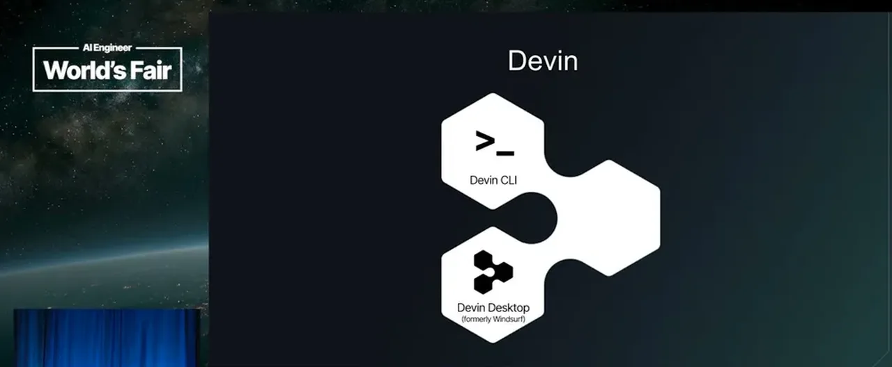
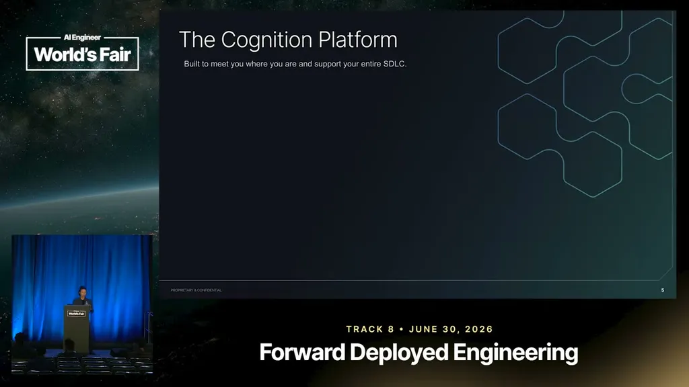
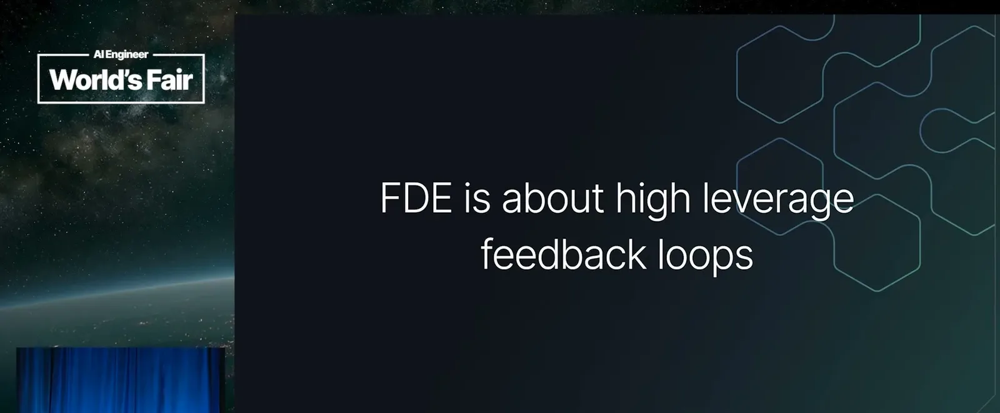
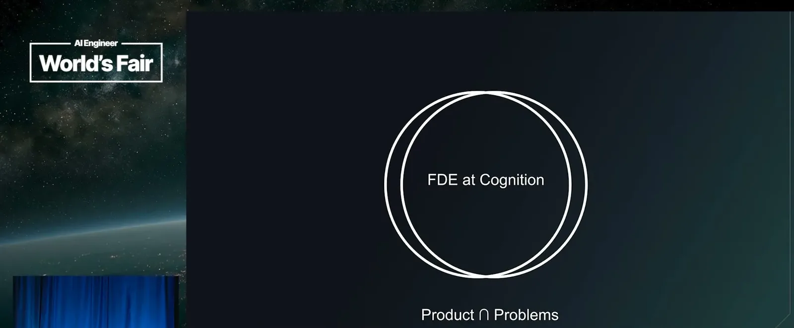
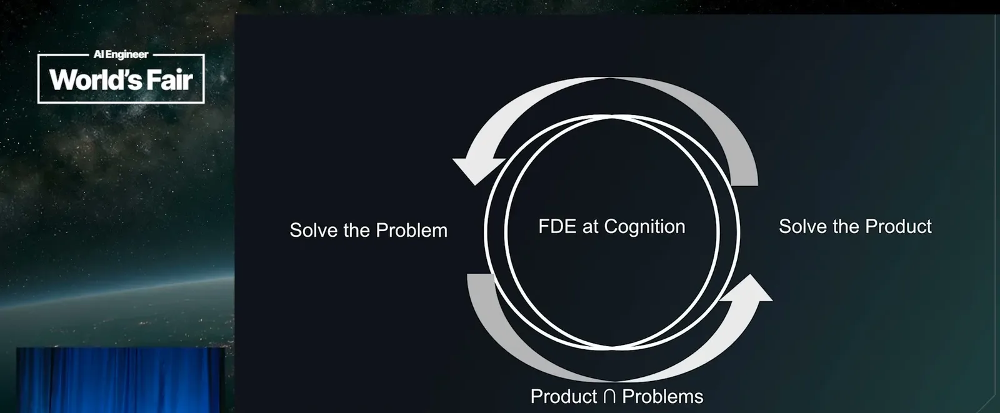
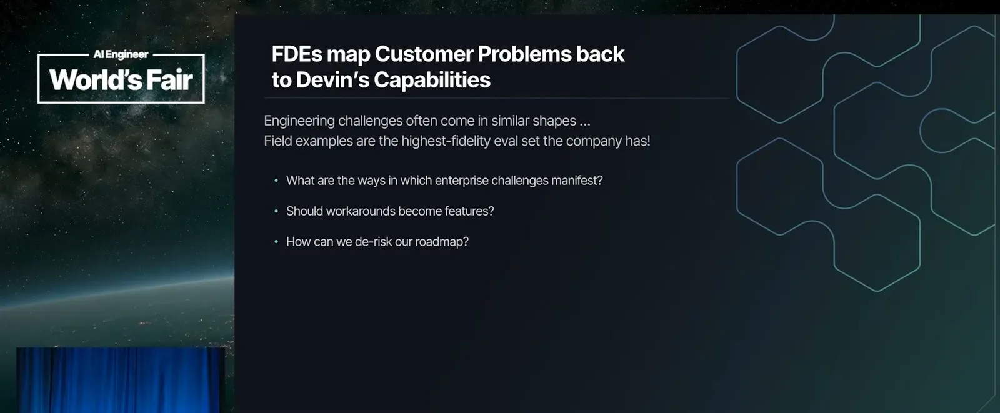
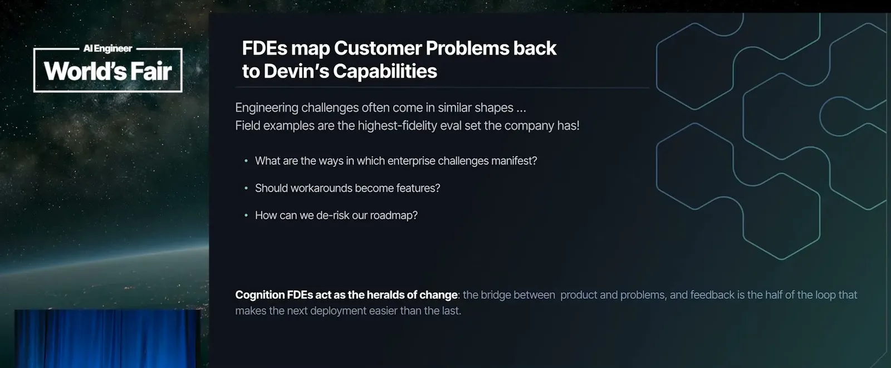
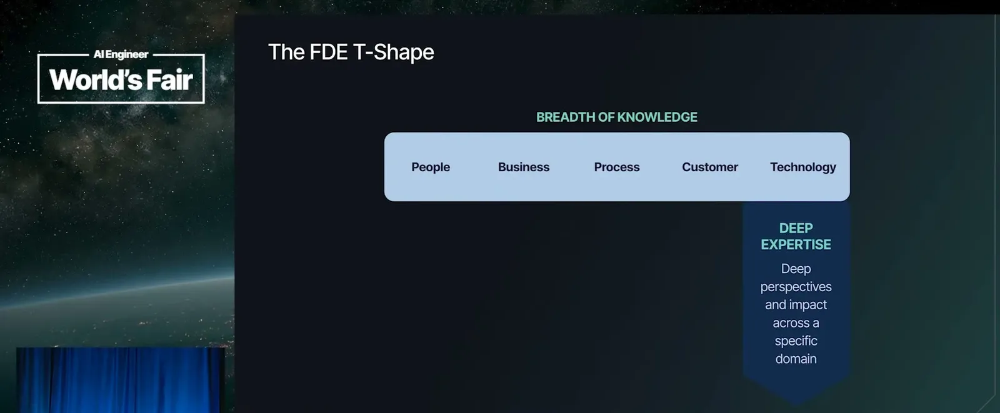
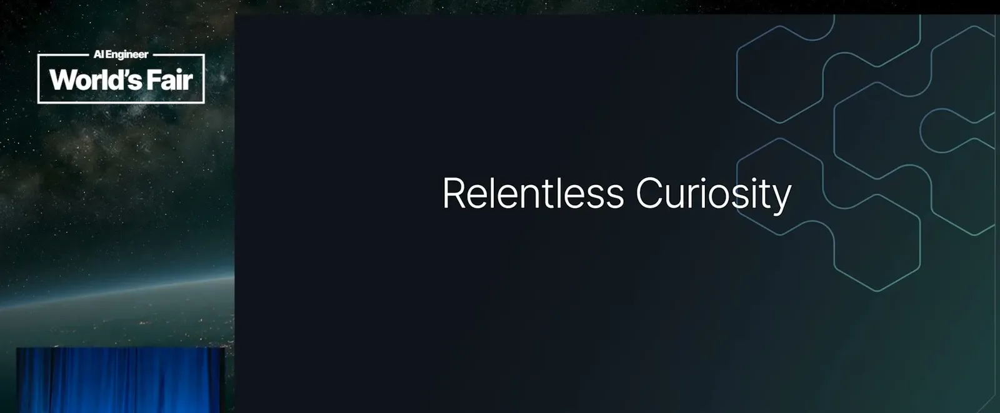
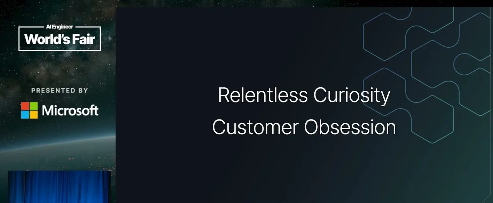
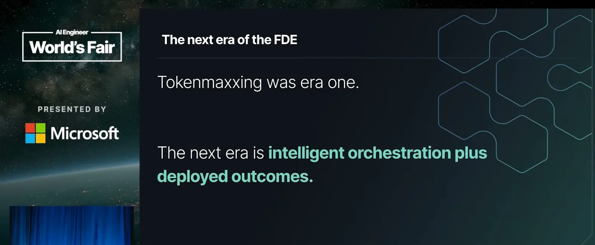
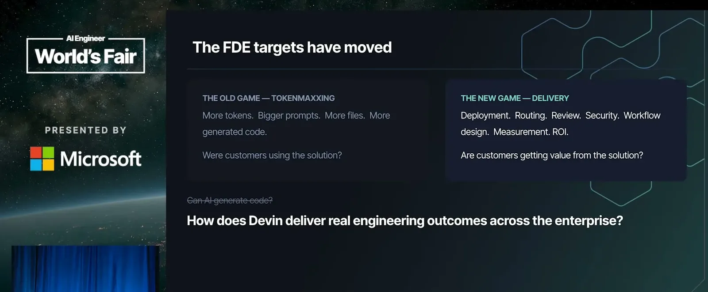
| Stance | Claim | t |
|---|---|---|
| asserts | Cognition says using its own agent internally over the last 6 months let it ship almost an order of magnitude more good-quality PRs than before, despite lagging on hiring. | 02:04 |
| asserts | Wu argues writing code faster is now only about 20% of the software delivery problem; testing, review, deployment, and maintenance make up the rest. | 04:08 |
| asserts | In a 3-month embedded engagement, Cognition says it delivered work equivalent to roughly 150% additional headcount for the customer. | 11:52 |
| asserts | Cognition claims an approximately 82% reduction in delivery timelines when comparing agile delivery metrics before and after Devin was introduced. | 12:54 |
| asserts | Cognition says it delivers almost double the PR volume compared to what engineers produced with single-point coding tools before adopting an agent harness like Devin. | 13:25 |
| asserts | At Nubank, an ETL migration originally staffed with 50 engineers was delivered in roughly a third of the original timeline using Devin. | 14:28 |
| asserts | At Built, Cognition claims its agent generates the weekly engineering output equivalent of more than 10 additional engineers. | 14:59 |
| asserts | At one of the largest banks in Latin America, a tax identification system migration was delivered with about half the expected engineering effort. | 14:28 |
Machine-readable copy embedded in this page (script#ontology) and in the corpus ontology.